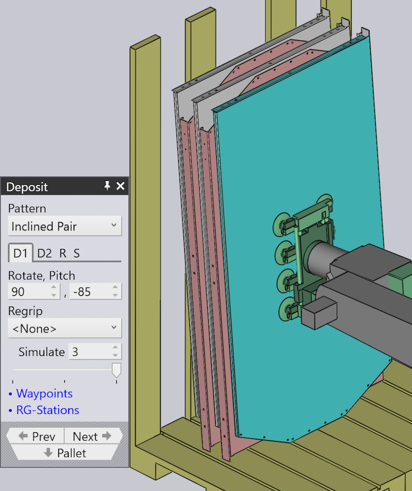
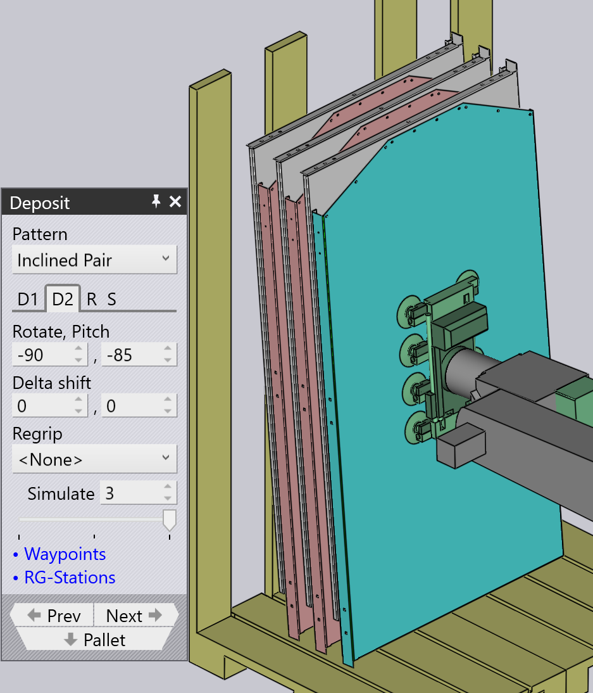
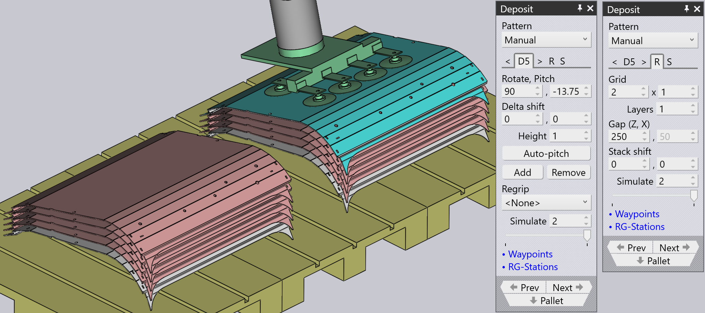

Deposit pattern types
Simple Grid
The Simple Grid pattern is the most commonly used, and just stacks parts in a rectangular grid on the pallet.
When we use Simple Grid position, only one deposit position D1 is available by default.
Weave
The Weave pattern is useful with long and thin parts. The parts in the D2 layers are placed 90° from the parts in the D1 layer as shown alongside.
-
The Weave setting controls the number of parts stacked side by side in each layer of the weave.
-
The Gap is the gap between each of these parts within the weave
-
The Grid settings on the Repeat tab can then be used to repeat the entire weave stack multiple times on the pallet. In this example, the weave stack is repeated twice (2 columns, 1 row).
-
The Gap (Z,X) setting on the Repeat tab is used when the weave is repeated and specifies the pitch between the weave layers.
Alternating
The Alternating pattern is the most flexible. In this pattern, you can control the orientation, flip and relative shift of every alternating layer.
Alternate pattern provides a more stable and also a compact stacking of parts.
When we use Alternating pattern, deposit positions D1 and D2 along with Regrip R1 are available by default.
| Adjust the Delta shift values in D1, D2 and add Regrip to lock the parts with each other. |
Alternating Batch
Alternating Batch pattern is similar to alternating pattern, but with the possibility to stack components in batches and alternate layers.
Batch shift is used to move parts to and from the Z and X axes within a batch.
Batch count is used to define the number of components per batch per deposit D1, which can range from 1 to 50. In the below example it is set to 5.
Delta shift is used to move an entire deposit D1 consisting of batches to and from the Z and X axes.

Use the layers option in the Repeat grid (R) tab to define the number of batches per deposit. In the below example, it is set to 2.

Drop to Basket
This pattern is used to drop small parts into a collection basket, using the mechanical gripper.
Conveyor
Conveyor pattern is used to deposit parts on a part conveyor. This option is essential when long thin parts are deposited on conveyor.
| When mechanical jaw gripper is used for medium size parts, all other pattern types will be disabled for selection, except for conveyor pattern. |

Inclined
The Inclined pattern is used to stack parts vertically against a wall (or a pallet that has a side-wall).
| This pattern is not always available. The part must be large enough for this to be feasible. For small parts, the robot cannot reach down low enough to stack the part against the wall. |
Inclined pair
This pattern type is very similar to Alternating pattern, except the parts are deposited vertically as a pair.
An additional Regrip is introduced either in D1 or D2 deposit to make a pair.
Auto-pitch determines the lean angle of the stack automatically.
Pitch setting is used to adjust the lean angle of the stacking and Delta shift values are used to move in the part in X and R axes to make a more compact stack.
 
Manual
The Manual pattern is used to place each layer of parts at a slightly different orientation.

-
Use the Add button to add a new part on top of the upper-most layer.
-
Use the navigation buttons next to the Dn tab to go to the previous or next layer.
-
The Delta shift, Rotate and Pitch settings can be used to adjust the part so it sits better on the part below. You can also use the Delta shift and click on Auto-pitch to ask Flux to compute an optimal pitch angle.
-
Use the Remove button to remove the topmost part.
-
After a manual stack is created, you can use the settings on the Repeat tab (R) to repeat the same stack across the pallet. The image above shows the same stack repeated for 2 columns, 1 row with a gap of 250 mm between columns.
-
The settings on the Sequence tab (S) can be used to control whether the parts are stacked by layer or by pile. If you use the pile-by-pile stacking, all the parts on the first pile are finished before we start on the second pile.